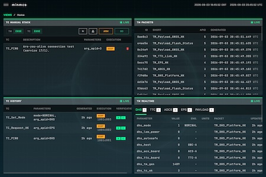
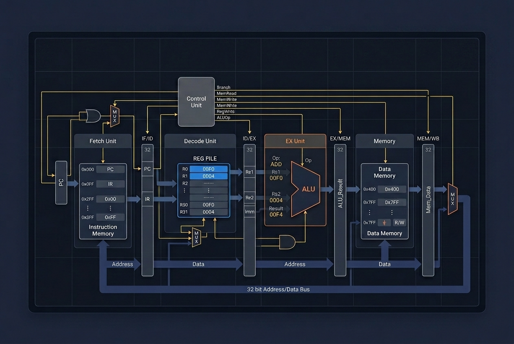
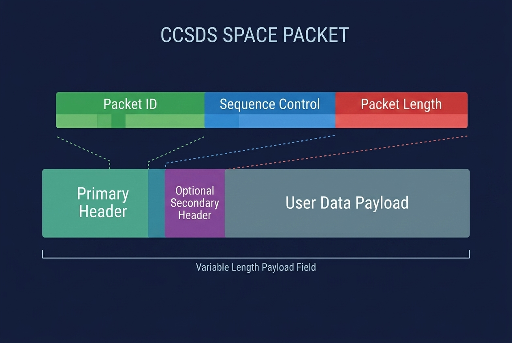

minmcs
Web-based mission control system for monitoring spacecraft telemetry and sending telecommands.

minscs
Minimalist spacecraft simulator with independent subsystems communicating over a simulated CAN bus.

minspp
Minimalistic implementation of the Space Packet Protocol from the CCSDS standard.

pocket-plus
Haskell implementation of the POCKET+ compression encoder from the CCSDS 124.0-B-1 standard.

Sim-Ops
Software suite for spacecraft operations simulation exercises and training.
Spacecraft Ops Skills
Collection of specialized AI agentic skills and tools for spacecraft operations, compatible with most popular agents.